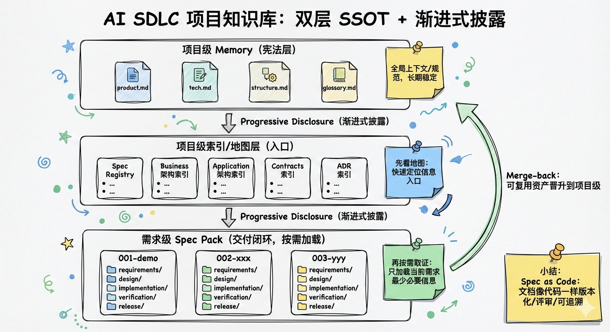
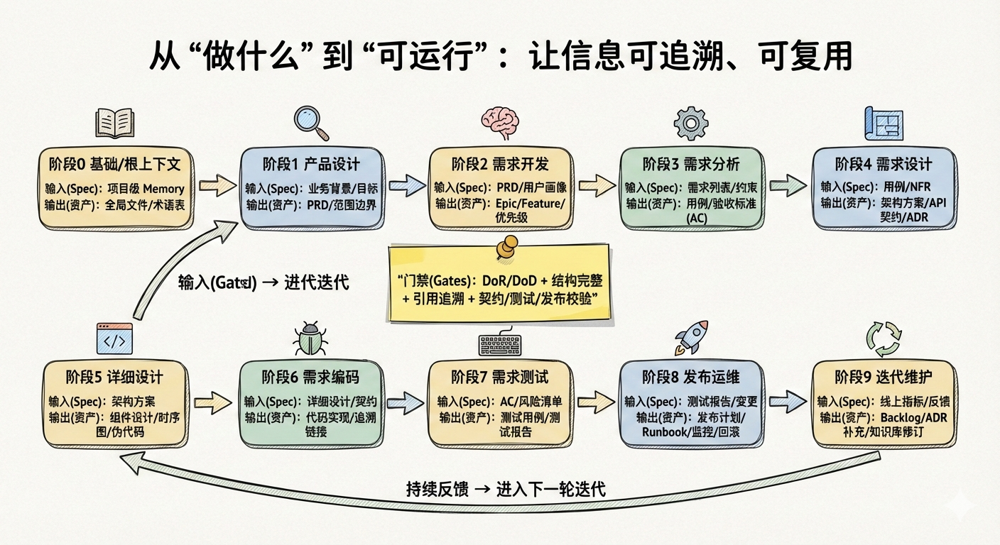

🚀 让 AI 真正理解你的项目：AI SDLC 知识库来了！
你是否也遇到过这些困扰？
- 📄 文档散落在各处，找一份需求文档要翻遍 N 个系统
- 🔄 代码改了，文档却没更新，最后发现文档和代码"各说各话"
- 🤖 想让 AI Agent 帮你写代码，但它总是理解错业务逻辑
- 📚 团队的最佳实践难以沉淀，每次都要重新摸索
- 🔍 需求从 PRD 到上线，中间发生了什么？找不到完整的追溯链路
如果以上任何一条戳中了你，那么今天要介绍的产品，就是为你量身打造的！
✨ 隆重介绍：AI SDLC 项目知识库
我们推出了一套全新的 AI SDLC 项目知识库方案，它不仅仅是一个文档管理系统，更是一个让 AI Agent 真正理解项目、让团队知识有序沉淀、让最佳实践自动复用的智能知识体系。
🧭 项目背景：研发新范式升级的重要一环
公司正在推进研发新范式升级：不只是“让大家用 AI”，而是把研发过程中最关键的两件事工程化、标准化，并让 AI 能稳定接入、持续迭代。
- 📚 建立 AI SDLC 项目知识库：把分散的信息变成可治理的项目资产（项目级 SSOT + 索引/地图），让信息组织、检索、引用、追溯更高效可靠。
- 🧩 建立各节点 SOP，并在各阶段用 AI 辅助提效：把“每一步读什么/写什么/如何验收”固化为工作流与模板，结合 SKILL 等机制，将最佳实践沉淀为工具能力，让质量与效率可复制、可度量、可持续优化。
这意味着它不是“一个文档规范”，而是一套可落地的组织级方法论 + 工具化实现。
🎯 核心设计思路
设计理念：项目级 SSOT + 需求级 Spec Pack + 渐进式披露 + SOP
我们的设计遵循一个核心理念：让知识有层次、有秩序、可追溯。
1️⃣ 双层 SSOT（单一事实源）
-
项目级 SSOT：长期稳定的知识资产
- 像"宪法"一样，定义项目的根本规则和架构
- 包含：产品愿景、技术架构、业务模块、应用组件、对外契约、运行手册等
- 长生命周期、强治理：持续更新，形成项目的长期知识资产
-
需求级 Spec Pack：每个需求的交付闭环
- 每个需求有自己的"Spec 包"，覆盖从 PRD 到发布的完整链路
- 短生命周期、强时效：文档随代码一起演进，避免脱节
- 需求完成后，通过 Merge-back 机制将可复用资产"晋升"到项目级

2️⃣ 渐进式披露：先看地图，再按需取证
AI Agent 不需要一次性加载所有信息，而是：
- 先看地图：加载项目级全局规范和索引（了解项目全貌）
- 再按需取证：当任务明确指向某个需求时，才读取该需求的 Spec Pack
这样既保证了效率，又避免了信息过载。
3️⃣ Spec as Code：文档即代码
将 Spec 文档当做项目代码一样对待：
- ✅ 版本控制
- ✅ 代码审查
- ✅ 持续更新
- ✅ 可追溯性（Spec ↔ 代码 ↔ 测试 ↔ 发布文档）
4️⃣ SOP：工作流 + 模版，让最佳实践成为默认路径
用工作流定义"每一步读什么/写什么/怎么验收"，用模版固化"怎么写"，让最佳实践成为默认路径，而不是"知道但做不到"。
🔄 SDLC 全流程支持
我们的知识库覆盖 SDLC 的完整 10 个阶段，每个阶段都有明确的输入（Spec）和输出（资产）：

| 阶段 |
核心价值 |
输入 |
输出 |
| 0. 基础/根上下文 |
统一价值观、术语、约束 |
项目级 Memory |
全局文件、术语表 |
| 1. 产品设计 |
明确"做什么/为什么做" |
Memory + 业务背景 |
PRD、范围边界 |
| 2. 需求开发 |
从想法到可交付的需求 |
PRD + 用户画像 |
Epic/Feature 列表 |
| 3. 需求分析 |
把需求写成可实现的规格 |
需求列表 + 术语表 |
用例、验收标准 |
| 4. 需求设计 |
将需求映射到技术方案 |
用例 + 架构 |
架构方案、API 契约 |
| 5. 详细设计 |
可编码的细粒度设计 |
架构方案 |
组件设计、时序图 |
| 6. 需求编码 |
产出可运行代码 |
详细设计 |
代码实现、追溯链接 |
| 7. 需求测试 |
验证符合 Spec |
验收标准 |
测试用例、测试报告 |
| 8. 发布运维 |
安全上线与可观测运行 |
测试报告 |
Runbook、监控告警 |
| 9. 迭代维护 |
基于反馈持续演进 |
用户反馈 |
Backlog、ADR 更新 |
每个阶段的输出都会自动入库，形成完整的追溯链路。
💎 核心价值
对团队而言
- ✅ 统一知识库：所有项目知识集中管理，不再散落各处
- ✅ 可追溯性：从 PRD 到代码到测试到发布，完整链路一目了然
- ✅ 规范流程：SOP 工作流和模版让最佳实践成为默认路径
- ✅ 知识沉淀：Merge-back 机制让可复用知识自动沉淀到项目级
对 AI Agent 而言
- ✅ 高效理解：渐进式披露让 Agent 快速了解项目全貌
- ✅ 准确执行：Spec 与代码同步，Agent 基于最新、最准确的信息工作
- ✅ 减少错误：清晰的追溯链路和验收标准，减少理解偏差
对组织而言
- ✅ 知识资产化：项目知识不再是"文档"，而是可治理、可复用的资产
- ✅ 最佳实践复用：工作流和模版让成功经验可复制
- ✅ 持续改进：通过 Merge-back 和迭代，知识库持续演进
🚀 立即行动
这不仅仅是一个工具，更是一次工作方式的变革！
我们相信，当 AI Agent 真正理解项目、当知识有序沉淀、当最佳实践自动复用，我们的开发效率和质量将迎来质的飞跃。
我们诚邀你：
- 试用体验：在你的项目中尝试建立
.aisdlc 知识库结构
- 反馈建议：告诉我们你的使用体验和改进建议
- 最佳实践分享：如果你有好的工作流和模版，欢迎分享给团队
第一期共建试点团队
🤝 加入我们（内部转岗/内推共建）
如果你希望参与公司级“研发新范式升级”的核心建设，欢迎转岗/内推加入项目共建。我们在做的是：把经验写成 SOP，把 SOP 写成工作流，把工作流变成工具，让 AI 在 SDLC 每个节点都能“读得准、写得对、产出可验收” ✨
我们期待这样的你（不限于）：
- 🧠 产品/方法论方向（PM/BA）：能把研发活动抽象成可执行 SOP（输入/输出/门禁/证据），善于做模板、口径、指标与落地推进。
- 🛠️ 工程实现方向（DEV/平台）：熟悉 Git/CI/CD/工程化与工具链，能把流程与门禁落到脚手架、CLI、自动化校验与可追溯链接上。
- ✅ 质量与发布方向（QA/测试开发/运维）：擅长把验收标准、测试策略、发布/回滚/监控等“可验证证据”结构化，沉淀为默认流程与模板。
- 🤖 AI 应用方向（Prompt/Agent/知识工程）：关注上下文组织、检索与披露策略、SKILL 设计与评估，让 AI 在真实项目中稳定提效。
你将获得：参与公司级标准建设的影响力、跨团队协作视角、AI+工程化的系统方法论沉淀，以及可复用到你业务线的工具与实践。
- 🙋♂️ 转岗/内推报名：@何媛妍（圈圈 Thea）
🌟 让我们一起，让 AI 真正理解项目，让知识有序沉淀，让最佳实践成为默认路径！
未来已来，让我们一起拥抱变革！ 🎉
基础服务部 2026-02